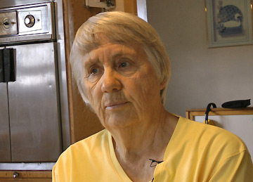

Advice for other caregivers
Advice for other caregiversInez

Age: 81-year-old
Age at start caregiving activities: 73
Her background:
Inez (81 years old) has been a farmer all her life. She has been married to her husband for 63 years and has four grown children who all live far from her farm. Inez has become increasingly involved in the care for her husband over the last nine years, while she also runs the inside and outside operations of their home. Inez’ husband (85 years old) was diagnosed with Parkinson’s disease many years ago and his mobility is now reduced. His memory has started to be affected by the illness as well.
Inez was 18 years old when she married her husband. The couple moved to a small house on land owned by her parents-in-law and there they had their first three children. They proceeded to build a bigger house and then had their fourth child.
Inez’s interest and skills as a caregiver started at the early age of six years old when her baby sister was born and she practically took over as her mother. She then took care of her parents and parents-in-law in their later years. Inez resumed her caregiver’s role nine years ago when her husband was diagnosed with Parkinson’s Disease. During this period, Inez found out that she was diabetic, which she found hard to believe initially because she had lived healthily her whole life.
Inez wishes she had better medical support for her husband’s and her own healthcare problems. There used to be a medical doctor in a village 50 miles from their home but, they have not been able to find a replacement since their doctor retired. In the closest village to their home, the number of doctors has decreased from ten to three over the last few years. The fact that the present-day doctors are from other countries does not help Inez as she finds it hard to adapt to their attitude and working habits which are quite different from the previous doctor’s. As a result, Inez feels she has had to resolve most medical issues by herself. For instance, by skilfully using information from her friends and internet to work on her diabetes she succeeded to control her blood sugar within five months after being diagnosed. Based on similar sources of information, Inez has also had the idea of varying her husband’s medications he takes daily to try to reduce his symptoms of dizziness.
Inez continues to keep a healthy lifestyle and makes all of their meals herself. She has a wide interest in many things and enjoys doing handiwork even if now she does not always have the time to do the things she loves doing. It can frustrate her to do the same things every day, and in those moments she sometimes thinks that there is no hope that things are going to change for the better. However, her personality is such that she never gets angry or stressed. In order to remain calm, Inez asks herself in challenging situations: “does it really matter? Does it really, really matter? Her answer is often “no”, so Inez quickly calms down.
Inez feels that she made the choice 63 years ago to marry her husband for better or worse, and she is determined to remain at his side until the end. For this, she trusts the strength of the long, close and unique bond she shares with her husband.